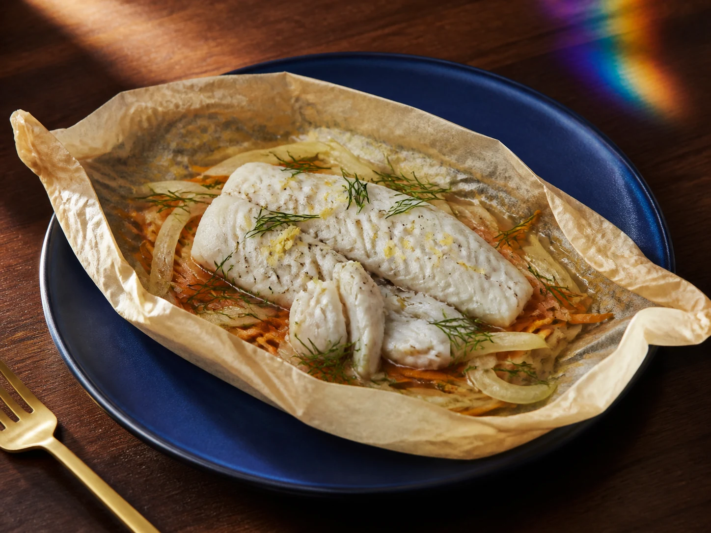

FT-0845
Lemon-Dill Cod & Fennel Parchment Parcels
Allergens: fish (cod).
Ingredients & method
Ingredients
- 1 pound (454 g) cod, divided into four equal fillets, thawed in the refrigerator if frozen
- 1 small fennel bulb (about 200 g), trimmed and very thinly sliced
- 1 medium carrot (about 100 g), cut into thin matchsticks
- 1 lemon, washed; 1 teaspoon zest and 1 tablespoon juice
- 1 tablespoon olive oil
- 2 tablespoons chopped fresh dill
- 1/4 teaspoon black pepper
- 4 tablespoons water
- Four 12-inch squares of baking parchment rated for 400 F
Method
- Heat the oven to 400 F (204 C). Check fish labels for added brine or phosphate additives; keep the cod chilled while preparing vegetables.
- Wash fennel, carrot, lemon and dill under running water. Prepare them on a clean board separate from the raw fish.
- Toss the fennel and carrot with oil, lemon zest, lemon juice and pepper; divide into four equal piles.
- Set the four parchment sheets on a rimmed baking sheet, with one vegetable pile on each sheet.
- Pat cod dry on the raw-fish work surface; place one fillet over each vegetable pile. Wash hands and clean the work surface afterward.
- Add one tablespoon water and one-quarter of the dill to each parcel; fold and crimp the parchment securely with space above the fish.
- Bake for 20 minutes; thicker fillets may need about 5 minutes longer. Time is an estimate, not the doneness test.
- Open each parcel away from your face; check the thickest part of every fillet reaches 145 F (63 C) with a clean thermometer. Reseal and cook longer if needed.
- Transfer the parcels to four plates and open carefully to release steam. Serve the vegetables and juices with the fish.
- Chill leftover fish and vegetables promptly in shallow containers; follow the storage note.
Dietary notes & storage
Review the fish portion, fennel/carrot quantities and any added fish brine against your own protein, potassium, phosphorus and sodium plan. Not clinically reviewed; no universal kidney-safe claim or calculated nutrient values. Agree portions and ingredient choices with your renal dietitian. Do not substitute potassium-containing salt.
Storage: Refrigerate leftovers in shallow containers within 2 hours, or 1 hour above 90 F (32 C), at 40 F (4 C) or below. Use within 3-4 days; reheat hot dishes to 165 F (74 C).
Not kitchen-tested · not clinically reviewed
Back to recipe list